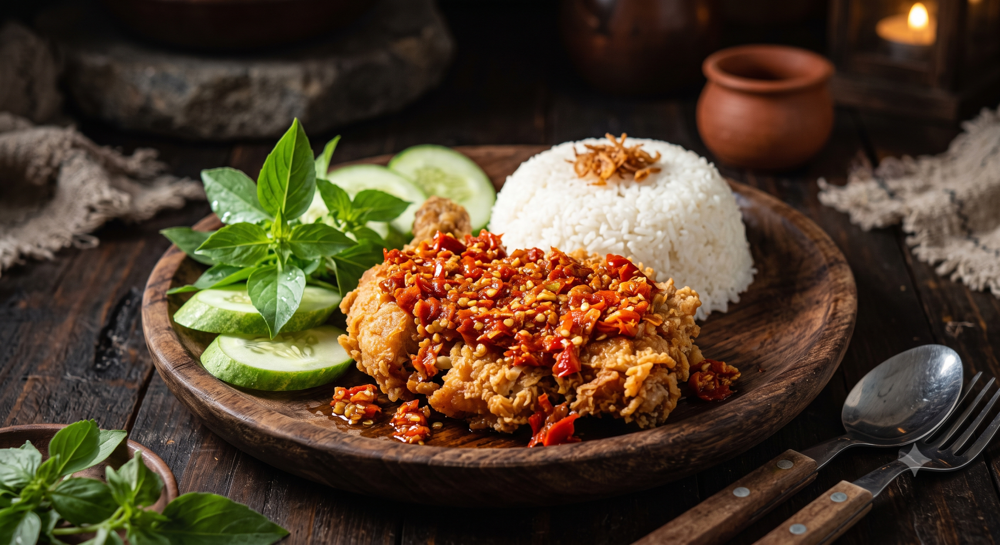

Nasi Ayam Geprek Sambal Gondes
Rp 30.000
Pilihan nasi paket, Indomie, lauk ala carte & minuman segar dengan rasa juara dan harga bersahabat untuk mahasiswa, pekerja, dan keluarga.
Proses penyajian menu favorit Ayam Pak Gondesss
Harga resmi per porsi di gerai Grogol. Level pedas Sambal Gondes 1-5 gratis pilih.
| KATEGORI | NAMA MENU | HARGA | KETERANGAN / KOMPOSISI | AKSI |
|---|---|---|---|---|
| Paket Nasi | Nasi Ayam Geprek Sambal Gondes | Rp 30.000 | Nasi putih pulen, ayam crispy geprek berlumur sambal gondes ulek dadakan, lalapan segar. | Pesan → |
| Paket Nasi | Nasi Ayam Goreng Sambal Kampoeng | Rp 30.000 | Nasi + ayam goreng rempah gurih, taburan kremesan garing, sambal terasi matang khas Semarang. | Pesan → |
| Paket Nasi | Nasi Ayam Goreng Kalasan | Rp 36.000 | Nasi + ayam goreng 1/4 ekor ungkep bumbu kalasan manis gurih, kremes, sambal & lalap. | Pesan → |
| Paket Nasi | Nasi Ayam Geprek Mozarella Sambal Gondes | Rp 38.000 | Nasi hangat, ayam geprek sambal gondes dengan lelehan keju mozarella berlimpah. | Pesan → |
| Paket Nasi | Nasi Ayam Sambal Matah | Rp 34.000 | Nasi putih dan ayam crispy dengan irisan bawang merah, serai, cabai rawit, minyak kelapa. | Pesan → |
| Paket Nasi | Nasi Goreng Kampoeng | Rp 29.000 | Nasi goreng aroma wajan rempah tradisional, suwiran ayam, pilihan telur ceplok/dadar. | Pesan → |
| Paket Indomie | Indomie Ayam Geprek Sambal Gondes | Rp 25.000 | Indomie goreng atau kuah bersama 1 potong ayam geprek berlumur sambal. | Pesan → |
| Paket Indomie | Indomie Telor Ceplok / Dadar | Rp 18.000 | Indomie goreng / kuah dengan sawi hijau segar dan telur ceplok atau dadar. | Pesan → |
| Paket Indomie | Indomie Saja | Rp 12.000 | Indomie goreng atau kuah dengan sentuhan sambal cabai geprek khas Pak Gondesss. | Pesan → |
| Paket Indomie | Indomie Ayam Geprek Mozzarella Sambal Gondes | Rp 39.000 | Indomie goreng, ayam geprek pedas, dan lelehan keju mozzarella legit. | Pesan → |
| Ala Carte | Ayam Geprek Sambal Gondes | Rp 25.000 | 1 porsi ayam geprek gurih garing tanpa nasi, level pedas 1 sampai 5. | Pesan → |
| Ala Carte | Ayam Goreng Sambal Kampoeng | Rp 25.000 | 1 potong ayam goreng bumbu kuning dengan kremes dan sambal kampoeng. | Pesan → |
| Ala Carte | Ayam Goreng Kalasan | Rp 32.000 | Ayam 1/4 ekor ungkep santan gula jawa, gurih manis empuk sampai ke tulang. | Pesan → |
| Ala Carte | Terong Crispy Geprek | Rp 12.000 | Irisan terong berlapis tepung renyah digeprek dengan cabai rawit merah. | Pesan → |
| Ala Carte | Jamur Crispy | Rp 13.000 | Jamur tiram segar dibalut tepung berbumbu, digoreng kering renyah. | Pesan → |
| Ala Carte | Telor Ceplok / Dadar | Rp 8.000 | Telur ayam negeri, ceplok (mata sapi) atau dadar daun bawang. | Pesan → |
| Ala Carte | Nasi Putih Pulen | Rp 8.000 | Nasi putih hangat dari beras premium, porsi melimpah. | Pesan → |
| Ala Carte | Krupuk Gendar / Kerung | Rp 3.000 | Kerupuk tradisional khas Jawa Tengah dari beras, renyah dan gurih. | Pesan → |
| Minuman | Es Teh Manis Jumbo | Rp 6.000 | Teh melati wangi dengan gula pasir murni, disajikan dingin. | Pesan → |
| Minuman | Nutrisari Jeruk / Es Milo | Rp 8.000 / 12.000 | Pilihan Nutrisari jeruk peras dingin atau susu malt cokelat Milo kental. | Pesan → |
| Minuman | Belgian Chocolate Drink (Hot/Cold) | Rp 14.000 | Cokelat pekat ala Belgia dengan susu segar, creamy, pereda pedas. | Pesan → |
| Minuman | Es Teh Tawar | Rp 4.000 | Seduhan teh melati dingin tanpa pemanis. | Pesan → |
| Minuman | Es Jeruk Murni / Hangat | Rp 8.000 | Perasan jeruk nipis dan jeruk medan alami dengan gula tebu cair. | Pesan → |
| Minuman | Teh Hangat Manis | Rp 5.000 | Teh melati wangi hangat, pas menemani santap malam. | Pesan → |
| Minuman | Air Mineral Botol 600ml | Rp 5.000 | Air mineral kemasan praktis (tersedia dingin dan suhu ruang). | Pesan → |
Isi formulir pemesanan online atau chat WhatsApp admin untuk nasi box kantor, kumpul kampus, atau makan siang cepat.